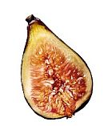

|

|
Tortenete
A füge az egyik legősibb kultúrnövényünk, a Földközi-tenger környékének minden országában fontos gyümölcs, de Kis-Ázsiában is termesztik, és mára Amerikában is elterjedt. Itthon a Buda vidéki domboldalakon, Budafok, Nagytétény, Érd, Diósd és Törökbálint környékén vannak régi hagyományai a fügének. Kisebb ültetvényeket a balatoni szőlőhegyek lejtőin is felfedezhetünk. Szépen díszlő példányai mediterrán hangulatot árasztanak. A fügefa ősi kultúrnövény voltát mi sem bizonyítja jobban, mint hogy ásatásokon 7000 éves fügemaradványokat is találtak már régészek. A fáraók kedvelt gyógynövénye volt, az egyiptomi középbirodalomból egy leleményes kertészt és idomított fügeszedő majmait ábrázoló alkotás maradt fenn. A Bibliában a fügefát a jó és a rossz tudás fájának tartották, fügefalevél volt Ádámon, amikor belekóstolt a tiltott gyümölcsbe, mely az ígéret földjének is jelképe. Az Énekek Énekében mint a termékenység és érzékiség szimbóluma szerepel. Az ókori Rómában a Romulust és Remust szoptató farkasnak egy fügefa adott árnyékot. A rómaiak már 29 féle fügefajt ismertek. Hazánkban a 16. századtól terjedt el. A fügefa régóta a termékenység, a házasság, a szerelem szimbóluma. Indiában a füge szent fa, aki egy fügét kivág, olyan bűnt követ el, mintha egy papot ölt volna meg. Vallási rituáléik során a fügefa a nő, a banán a férfi, gyakran még össze is házasítják őket. A muszlimoknál is szent gyümölcs.
HOGYAN VÁLASSZUNK?
A kiválasztáskor figyeljünk a gyümölcshús keménységére, mert az éretlen vagy csak félig érett gyümölcs kellemetlen ízű, fanyar. Az érett fügéket óvatosan szállítsuk, nagyon érzékenyek az ütődésre, rázkódásra.
HOGYAN TÁROLJUK?
Az érett gyümölcs csupán néhány napot bír ki a hűtőszekrényben. Aszalni a magyar fajtákat nem lehet.
HOGYAN KÉSZÍTSÜK ELŐ?
Az aszalt és a friss fügét is jól mossuk meg, a szárát távolítsuk el. A külső része is ehető!
HOGYAN FŐZZÜK?
Édes ételekhez, nyers sonka és szalámi mellé, sajtokhoz nyersen fogyasszuk. Az olaszok mozzarellával és pármai sonkával fogyasztják héjastul.
FELHASZNÁLÁSI JAVASLAT
Salátákba kitűnő, párolva isteni köretet készíthetünk belőle. Termőhelyein mindenféle finomság készül belőle: fügerétes, fügesajt, fügepogácsa, fügekalács.
MIÉRT NE?
Különleges töltött fügét készíthetünk, ha a gyümölcsöket félbevágjuk, belsejüket kikaparjuk, majd a gyümölcshúst friss kecskesajttal, pirított fenyőmaggal, citromfűvel és kevés túróval összekeverve visszatöltjük a gyümölcsbe. A tetejére csepegtessük méz és ribizlilikőr keverékét.
ISMERJÜK MEG JOBBAN!
A fügefa (Ficus carica) az eperfafélék családjába tartozik (Moraceae), rokona tehát a lakásokban gyakori ficus, a gumifa és az eperfa is. A füge 3-10 méteres cserjéjén júliustól októberig teremnek a 3-5 cm nagyságú körte vagy csepp alakú termések. Húsa pirosas, lédús, apró magvakat találunk benne. Héja zöld, lila vagy sárga. Az ókorban a termés gyógyító erejét kimerültség ellen, gyors roborálószerként alkalmazták. A fügének nagy a cukortartalma, a belőle készített pép pedig kitűnő gyógyír volt fekélyre, torok- és fülfájás esetén is használták. Nyers állapotban emésztési zavarok, székrekedés ellen, a főzete pedig köhögés és tüdőbaj esetén régről ismert házi patikaszer. A füge segíti a szervezet méregtelenítését, erősíti az immunrendszert, kiegyenlíti az esetleges túlzott savképződést, mely reumát és fejfájást okozhat. Káliumtartalma adja tápértékét, emiatt jó hatá
|